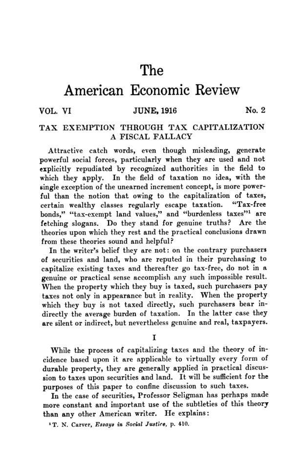

Adams, 1916: a isenção pela capitalização é uma falácia fiscal
Leitura: 8 min
T. S. Adams contesta a ideia de que quem compra títulos ou terra tributados compra livre de imposto e sustenta que a concorrência apenas equaliza o ônus entre os investimentos.


Todo comprador de terra, escreveu a minoria do comitê de tributação da cidade de Nova York, livra-se de todos os impostos futuros à alíquota estabelecida, porque os impostos são descontados no preço que ele paga. Seria apenas um agente arrecadador da cidade. Logo, transferir o imposto dos prédios para o valor da terra não seria injusto, mesmo que derrubasse o preço dos terrenos: seria o único modo de fazer os atuais proprietários pagarem alguma parte dos encargos do governo.
T. S. Adams abriu o número de junho de 1916 da American Economic Review contra esse raciocínio. Os slogans que ele resumia, títulos isentos, valores fundiários isentos, impostos sem ônus, lhe pareciam ter uma força social enorme, sobretudo porque não eram repudiados explicitamente pelas autoridades da área. Sua tese é que os compradores de títulos e de terra pagam impostos de verdade, de modo direto quando o bem é tributado e de modo indireto quando não é.
O que é a isenção pela capitalização?
Adams começa por E. R. A. Seligman, o autor americano que, a seu ver, mais usara as sutilezas da teoria no caso dos títulos. No exemplo de Seligman, um imposto especial sobre os dividendos de uma empresa derruba o preço da ação até que o rendimento volte ao nível dos investimentos não tributados. O antigo acionista perde; o novo comprador não é afetado, porque o imposto foi capitalizado. Com o tempo, os antigos acionistas desaparecem, e tributar de novo o comprador não seria dupla tributação injusta.
Na terra, a versão é mais drástica. Cada comprador só aceita o terreno pelo aluguel capitalizado menos o ônus capitalizado, inclusive os impostos; sem aumento de alíquota, passa a ser isento. Se a terra muda de mãos, em média, a cada trinta anos, a equidade exigiria dobrar a alíquota a cada trinta anos, até tomar toda a renda econômica, ou apenas a parte necessária às despesas públicas, conforme o gosto de quem propõe.
Por que Adams considera a tese perversa?
Porque, tratada como questão de equidade, ela se contradiz. A tese afirma que o comprador escapa do ônus comum e goza de um privilégio; mas foi construída sobre a hipótese de que, depois da capitalização, ele ganha exatamente o que outros investidores e empresários ganham na mesma comunidade. Não há privilégio a corrigir.
Em segundo lugar, ela leva ao confisco. Se os títulos trocam de mãos a cada dez anos, a lógica pediria dobrar o imposto sobre eles a cada dez anos até absorver todo o valor. Adams reconhece que Seligman e outros rejeitam conclusões assim, mas diz que o fazem apesar da ideia, e não por causa dela. O eleitor comum, convencido de que um grupo escapa impune, quer aplicar um imposto médio toda vez que alguém compra. Os defensores do imposto único, observa, tiveram a coragem de levar a premissa ao fim, o confisco do valor da terra.
Em terceiro lugar, o aumento progressivo da alíquota só funciona por engano. Se o comprador souber que o imposto vai subir, descontará os aumentos futuros e avaliará o bem como uma anuidade com prazo, passando o ônus adiante.
“O comprador precisa ser surpreendido, ou não pode ser tributado.” (“The purchaser must be surprised or he can not be taxed.”)
O que acontece quando o programa é anunciado?
A tese se desfaz. Suponha que todos soubessem desde o início que o imposto sobre títulos subiria dez por cento a cada dez anos. A empresa emissora e todos os compradores se protegeriam; menos gente entraria em negócios que dependem da emissão de títulos; o capital ficaria fora do setor até que os preços subissem o bastante para compensar o ônus. Por repercussão, o peso iria para os consumidores. Do mesmo modo, uma isenção concedida às claras beneficiaria o consumidor.
Para Adams, ônus e privilégios conhecidos se difundem pelo conjunto dos consumidores. Os compradores de bens duráveis não são santos nem pecadores: pagam, às vezes de forma aberta, às vezes de forma indireta e silenciosa, os mesmos impostos que os outros. Se não pagam diretamente, pagam pela concorrência do capital atrás do lucro extra que o imposto ausente representaria.
“Pagar impostos em silêncio é um fenômeno muito real e genuíno.” (“Silent taxpaying is a very real and genuine phenomenon.”)
O erro cardinal da teoria, como em geral formulada, está em tomar a taxa corrente de capitalização sem reconhecer que ela é afetada por todos os impostos existentes. Em termos de teoria pura, essa taxa resulta de todas as oportunidades conhecidas de investimento e de todos os impostos conhecidos, e registra automaticamente o ônus médio. Quem compra um bem durável capitaliza sua renda líquida a uma taxa mais baixa quando o ônus geral é alto e mais alta quando é baixo. Por isso o comprador posterior paga a alíquota média: compra livre apenas do excesso sobre ela. As distinções de Seligman entre impostos exclusivos e inclusivos, nessa leitura, tornam-se desnecessárias.
E o incremento não ganho da terra?
Adams aplica o mesmo raciocínio, admitindo para argumentar que o incremento exista. Ele se difundiria de vários modos. Parte iria ao Estado, porque terrenos vazios são comprados e tributados só pela expectativa de valorização, e os valores da terra correm à frente da renda presente capitalizada. Parte iria aos compradores de produtos agrícolas: o pioneiro aceita, na média, ganhar menos que um salário diário porque espera a valorização, e com isso há mais fazendas e preços agrícolas mais baixos. Parte iria aos usuários das ferrovias, aos consumidores de bens industriais, pela depreciação não lançada sobre prédios, e aos inquilinos.
Uma pergunta, diz, ilumina o ponto: compensaria ao Estado comprar toda a terra privada aos preços correntes e esperar? Poucos defenderiam o negócio. O Estado perderia os impostos sobre terrenos sem uso, sofreria as perdas que os investidores em imóveis sofrem, receberia por muito tempo aluguéis menores que os juros do capital investido e suprimiria as atividades estimuladas pela busca do incremento. Se a resposta é essa, conclui Adams, a maior parte do incremento não ganho não é não ganho.
Há algum argumento para tributar mais?
Há um, formal. É conveniente que as pessoas não só paguem impostos, mas sejam vistas pagando. Por isso pode haver justificativa para elevar, de forma gradual e moderada, o imposto sobre títulos que nada pagam diretamente, até igualá-lo ao de formas semelhantes de propriedade pessoal; ninguém tem direito adquirido à isenção. O argumento não se aplica a imóveis, cuja alíquota, segundo Adams, já é quase sempre mais alta que a das outras formas de propriedade.
As conclusões finais são práticas. A tributação americana sobre valores de capital consegue alcançar o terreno vago, mas impõe ao avaliador local a tarefa quase impossível de capitalizar incertezas futuras; um dia seria preciso usar mais a base de renda. Aumentos esperados do imposto sobre a terra também seriam, em parte, transferidos. E a agitação pelo imposto único sairia cara justamente por impedir a difusão, sem aumentar a receita; para Adams, o modo justo de enfrentá-la seria derrubar as cláusulas constitucionais que a impedem e vencê-la no voto.
Adams encerra dizendo que escrevera com mais dogmatismo do que sentia e que não considerava nova a doutrina, já apontada por Charles J. Bullock no caso da terra. E faz questão de separar teorias de pessoas: diz ter apenas admiração genuína por Seligman, Fillebrown e os seguidores de Henry George, que trouxeram ao campo da tributação uma paixão desinteressada.
Na minha leitura
Na minha leitura, o ponto central de Adams é de equilíbrio geral. A teoria que ele combate trata a taxa de desconto como dada e o imposto como algo que só afeta o preço do bem tributado. Adams mostra que a própria taxa de desconto é produto de todos os impostos, e que o comprador de qualquer ativo já paga, por ela, o ônus médio. O que a capitalização elimina é só o diferencial em relação à média.
A observação sobre a surpresa é igualmente técnica. Um aumento de imposto só recai sobre quem já possui o bem se não for antecipado; se for anunciado, é descontado no preço e repercute sobre a oferta e sobre os consumidores. É a distinção entre mudanças tributárias antecipadas e não antecipadas, que decide quem de fato arca com o imposto.
Glossário
- Capitalização de impostos
- redução do preço de um bem durável no valor presente dos impostos futuros que ele pagará.
- Taxa de capitalização
- taxa de retorno usada para converter uma renda esperada em valor presente.
- Incremento não ganho
- valorização, sobretudo da terra, que não resulta do trabalho ou do investimento do dono.
- Imposto único (single tax)
- proposta de Henry George de tributar apenas o valor da terra, absorvendo a renda fundiária.
- Renda econômica
- excedente pago pelo uso de um recurso de oferta fixa, como a terra.
- Difusão
- para Adams, a distribuição de ônus e privilégios tributários ao conjunto dos consumidores pela concorrência.
- Anuidade com prazo
- série de pagamentos que se extingue depois de certo tempo.
Fontes
- Tax Exemption Through Tax Capitalization: A Fiscal Fallacy — T. S. Adams (pp. 271–287). JSTOR · Internet Archive (PDF)
- Edição completa, com os demais artigos: Nº 141 do Arquivo.
Documento em domínio público (EUA, publicado antes de 1931), via JSTOR Early Journal Content e Internet Archive. Resumo e comentário do autor deste site, sem afiliação com a American Economic Association. Encontrou um erro? Escreva: a correção é publicada no próprio texto, com data.
↑ Nº 141 · A falácia do imposto capitalizado e o salário decidido por um árbitro Compton, 1916: o árbitro de salários e a falta de um critério →